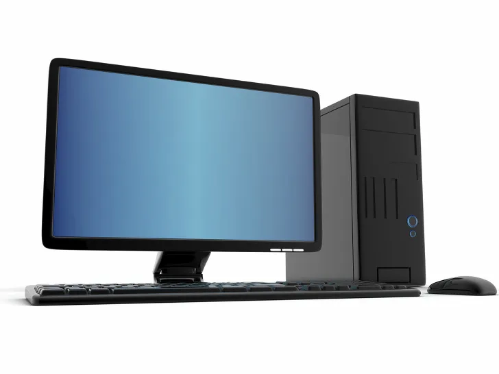

Web
Shopping
Web
Shopping
 대한민국의 컴퓨터 제조사겸 유통사. 게임펍의 계열사이다. 컴퓨터
조립과 판매에 특화된 회사로 제조업은 데스크톱 말고는 하지 않고
대부분은 유통, 정확히는 ODM[2]을 전문으로 하고 있다. 과거에는
노트북 판매가 주력인 회사였지만, 이후 태블릿 컴퓨터에서 어느
정도의 성과를 올리고, 데스크톱에서도 상당한 판매율을 보이고 있다.
대한민국의 컴퓨터 제조사겸 유통사. 게임펍의 계열사이다. 컴퓨터
조립과 판매에 특화된 회사로 제조업은 데스크톱 말고는 하지 않고
대부분은 유통, 정확히는 ODM[2]을 전문으로 하고 있다. 과거에는
노트북 판매가 주력인 회사였지만, 이후 태블릿 컴퓨터에서 어느
정도의 성과를 올리고, 데스크톱에서도 상당한 판매율을 보이고 있다.

LApple 시리즈의 후속작으로, Apple Lisa에서 처음 시험적으로
채택했던 GUI 운영 체제를 탑재했는데 그 당시에는 매우 획기적이었다.
현재 Windows 등에서 사용하는 '아이콘', '창' 등을 대중에게 최초로
선보인 것이 Macintosh이다.
 LG가 IBM과의 관계를 정리하면서 새로운 브랜드로 X 를 활용하였다.
같은 계열의 유명한 브랜드로는 xCanvas의 TV가 있다.잠실구장의
X-존도 존재한다.
LG가 IBM과의 관계를 정리하면서 새로운 브랜드로 X 를 활용하였다.
같은 계열의 유명한 브랜드로는 xCanvas의 TV가 있다.잠실구장의
X-존도 존재한다.
2019.0.23.DW아카데미042-123-4567